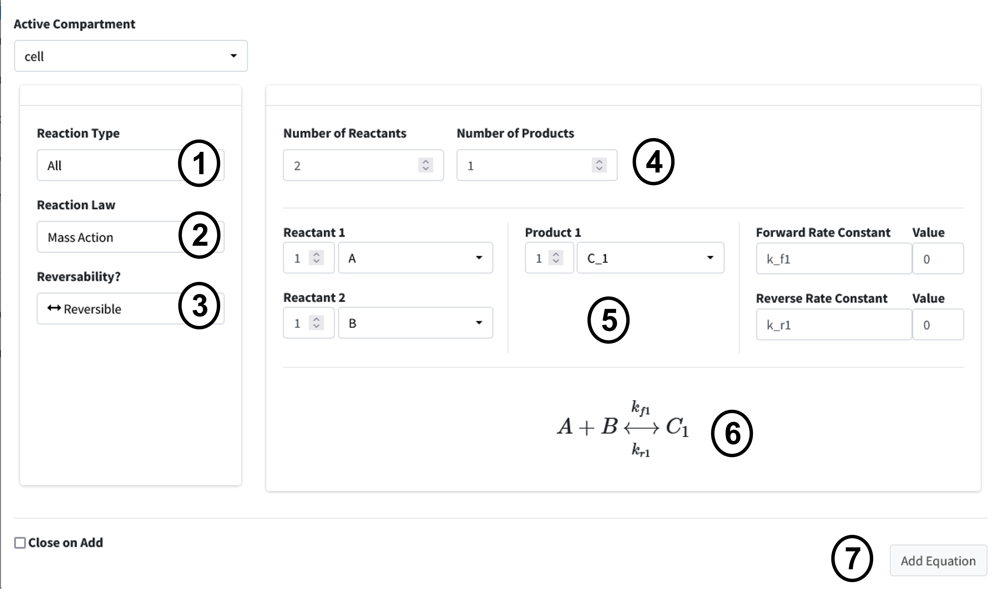
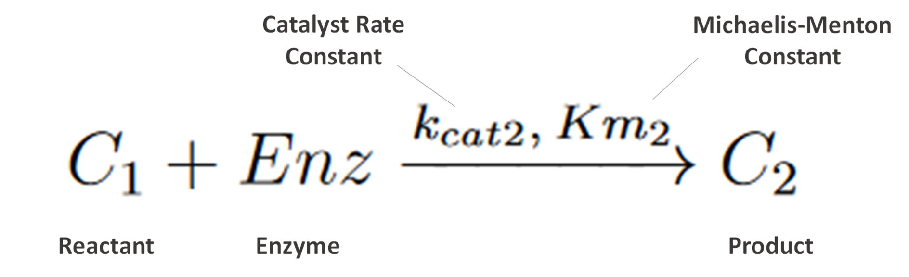
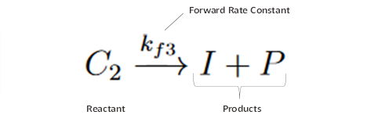
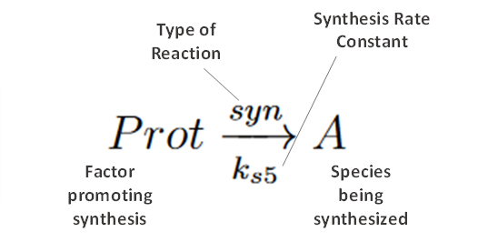

Create Reactions
Scroll down to the “Reactions” box in the “Create Model” tab. In this section we will build up the sets of reactions that make up our reaction network. Press the “+” button to begin adding equations.
Equation 1 - Law of Mass Action, Reversible

Chemical reactions like this follow the law of mass action. This first equation is a reversible reaction. The equation consists of two reactants, one product, and moves in both directions where are forward rate constant is “k_f1” and our reverse is “k_r1”.
This reaction input can be seen in the below figure. The steps for the following equation are:
Select “Chemical Reaction” for equation type.
Select “Mass Action” as the law.
Select “Reversible” as the reaction direction.
Set the equation to have two reactants and one product.
Fill out equation information. Rate constant names are autogenerated for all equation types using the number of the current equation as their number at the end.
This is the equation builder that shows what your built equation looks like.
Press the “Add Equation” button.

Equation 2 - Michaelis-Menton Kinetics
{kind=link}

Next, we enter the second equation, conversion of C1 to C2 by the enzyme “Enz”. These reactions follow Michaelis-Menten kinetics. Figure 7 shows how this equation looks entered the program.
The steps are as follows:
Change the Reaction Type dropdown to “Enzyme Based Reaction”.
Select “Michaelis Menten” as the Law.
Enter the equation information into the builder.
Press the “Add Equation” Button.

Equation 3 - Law of Mass Action, Unidirection
{kind=link}

The next reaction is a conversion of C2 to product P and inhibitor I. This is a one directional reaction with one reactant and two products following the law of mass action.
Change the Equation Type dropdown to “Chemical Reaction”.
Select “Mass Action” as the Law.
Change the reversability option to “Irreversible”.
Set the Number of Reactants to “1” and the Number of Products to “2”.
Enter the equation information into the builder.
Press “Add Equation” button.

Equation 4 - Law of Mass Action, Unidirection

Our next reaction is the inhibitor of Prot. This is another chemical reaction following the law of mass as in Equations 1 and 3 with two Reactants I and Prot converted to I.Prot. The user interface input is below in Figure 9. The steps should be familiar to your by now, but they are as follows:
Change the Reaction Type dropdown to “Chemical Reaction”.
Select “Mass Action” as the Law.
Change the reversability option to “Irreversible”.
Set the Number of Reactants to “2” and the Number of Products to “1”.
Enter the equation information into the builder.
Press “Add Equation” button.

Equation 5 - Synthesis by Factor
{kind=link}

Our next reaction is the synthesis of A by Prot, where Prot is a factor promoting synthesis (as opposed to being directly converted).
Set the Reaction Type to “Chemical Reaction”.
Change the Reaction Law dropdown to “Synthesis”.
Click the “Factor Driving Synthesis?” checbox.
Fill out equation builder with the species to synthesize and its corresponding factor.
Press the “Add Equation” button

Equation 6 - Degradation by Rate

Our final reaction is the degradation of I.Prot by a rate. This is useful for when we know the rate at which a protein is degraded in the cell but do not really know what is causing the degradation. These are often concentration dependent.
Set the Reaction Type to “Chemical Reaction”.
Change the Reaction Law dropdown to “Degradation (Rate)”.
Fill out equation builder with the species to degrade and its rate constant.
Make sure the “Concentration Dependent” box is checked.
Press the “Add Equation” button.